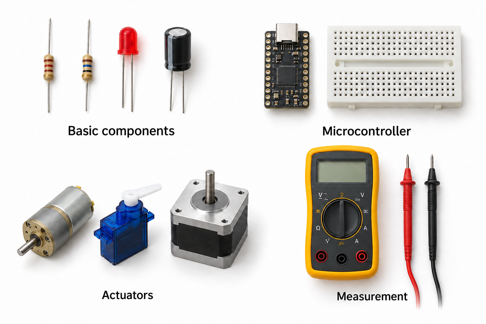
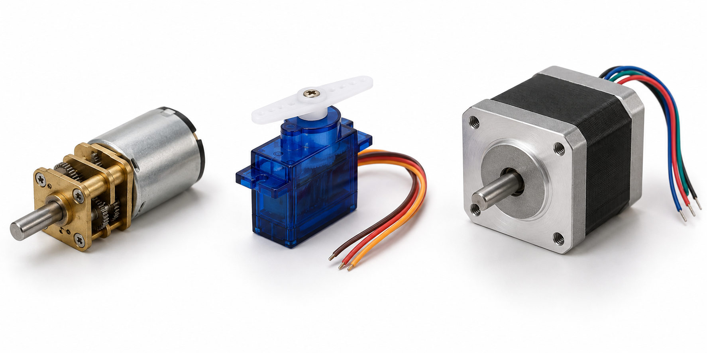

課程文件 / 簡介
Introduction to 由電路基礎到 ESP32 與機械人控制。先理解，動手驗證，再建立自己的項目。
7 個階段 · 28 個單元 · 按自己的進度學習
如何使用這份教材 先讀概念和圖解，寫下預測，再做小實驗。每課可分幾次完成；沒有硬件時可先計算或模擬，但不要把實作勾選為完成。每四課回顧一次，能解釋並重做才前進。
這份課程以理解和實作為目標，不要求製作 PCB。馬達、RC 伺服、智慧伺服和步進馬達是不同的練習例子，不需要全部購買。
同時練習英文 使用右上角 English 切換同一單元。每課附中英術語表；英文版 AI 測驗會以簡單英文發問，也可按需要解釋生字。兩個版本共用學習進度。
開始前準備
用現有零件開始 ESP32-C3 SuperMini 可以用作入門。先確認你手上板子的接腳圖、USB設定及電源方式；同名板子未必同一電路。課內接腳是示例，接線前要對照實物。ESP32 GPIO 使用3.3 V邏輯，不直接接5 V訊號或馬達。
現有小車如何用在課程？ 先保留 Raspberry Pi 5＋四路控制板的工作版本。學習時用ESP32做小實驗，後期再決定是否加入車上。購買截圖顯示的是 Omni B60、直徑60 mm；30 mm可能指半徑，請量度實物。全向輪與麥克納姆輪的運動公式不能混用。
截圖不足以確認穩壓板的連續電流、Pi 5供電能力或馬達板版本。型號、電池滿充電壓、接頭極性、驅動能力都先寫入硬件表，確認後才接線。
第一次實作先閱讀單元4的量度方法。 只做低壓直流實驗；不拆市電電源、不改電池包。接線時斷電，馬達先離地低速測試，準備可即時切斷動力的開關。焊接、電池和首次馬達供電請老師或有經驗隊友在場。
程式以 Arduino-ESP32 3.x API 為基礎；已作內容檢查，但未在你的板子和馬達上實測。每個範例的硬件前提都要先確認。
階段 1 / 電路基礎
01 電路、能量與訊號畫出一個裝置的供電與訊號圖，理解每條線的角色。
準備：麵包板、萬用錶、基礎元件；也可先紙上推演

電子零件、控制板、馬達和萬用錶的辨識示意. AI 生成辨識圖；不是實物型號、尺寸或接線依據。 供電與訊號，是兩條不同的路 控制器 驅動器 電池 馬達 命令／訊號 供電路徑；回流未畫出 圖解 01 · 供電與訊號，是兩條不同的路藍線傳送命令，啡線提供能量。試指一指：如果主機停止傳命令，馬達電源是否仍然存在？ 核心概念 一切從完整迴路開始 電流需要閉合路徑。電源提供能量，負載把能量轉成光、熱或運動；電荷不是經過LED後就用光。電路圖表示電氣連接，與零件在桌上的位置無關。
電壓一定有參考點 說某點是3.3 V，必須說相對哪一點。GND通常是選定的參考及回流網路，不一定接大地。兩裝置用一般非隔離GPIO通訊時需要共同參考；共地不代表把所有正電源短接。
控制線與供電線 微控制器輸出訊號，驅動器處理負載電流。把LED改成馬達，不能只換負載而保留原接法。馬達的功率與切換干擾需要專門處理。
你的硬件是學習例子 Pi 5執行Linux和高層程式；ESP32-C3適合輸入輸出；Arduino是開發生態，也能寫ESP32。現有亞博四路驅動板的對應官方版本有STM32，可處理馬達及編碼器；先核對實物，不必為了學習額外串入ESP32。
算一次，想一次 把「按按鈕令車前進」拆成兩條路：訊號由按鈕→控制器→驅動器；能量由電池→驅動器→馬達→回到電池。按鈕不需要承受整部車的馬達電流。
查看文字接線／流程說明 訊號：按鈕 ─→ ESP32／Pi ─→ 驅動器
能量：電池 + ─→ 驅動器 ─→ 馬達
電池 − ←──── 回流 ─────┘ 功能示意，實際接線以模組規格為準。
動手實驗 關閉電源，整理已有板子與電池的型號；未知項目寫待確認。 備份小車原本可工作的程式與參數，先不改它。 畫一張電源圖，再畫訊號圖，兩張圖分開看。 追蹤LED或馬達的一個完整迴路，標出每個GND連接。 向自己解釋拔除哪條線會停電、哪條只會失去命令。 留下甚麼證據？ 硬件表＋供電圖＋訊號圖；每條未知電壓都有待確認標記。
遇到問題時 預測與結果不同時，先斷電核對接線、單位和元件規格；一次只改一項，再重測。
自我檢查：理解與實作 0 / 7 能自己解釋才勾選理解；完成實驗並保存證據才勾選實作。
理解 實作 迷你測驗 提示詞包含本課內容。複製到你選用的 AI，一次回答一題。
開關放在迴路不同位置仍可控制LED嗎？ 兩板共地為甚麼不代表合併正電源？ 微控制器如何控制比自己耗電大的負載？ 複製 AI 測驗提示 查看完整提示詞 延伸挑戰 為感測器自動開風扇畫出相同兩張圖，指出新增的驅動環節。
中英術語
circuit 電路
load 負載
ground 接地／參考地
signal 訊號 延伸閱讀：Yahboom 四路馬達控制板 · ESP32-C3 規格書
沿著節點追蹤電壓 3.3 V 330 Ω LED Vf ≈ 2.0 V VR ≈ 1.3 V I ≈ (3.3 − 2.0) / 330 = 3.94 mA 圖解 02 · 沿著節點追蹤電壓沿完整迴路讀圖：電阻分掉約1.3 V，LED約2.0 V；同一串聯路徑的電流相同。 核心概念 先把單位弄對 V是電壓、A是電流、Ω是電阻、W是功率。1 mA=0.001 A，1 kΩ=1000 Ω。電阻的V=IR；P=VI，也可對電阻寫成I²R或V²/R。
電源電流是能力 5 V／3 A表示在規格條件下可提供的電流能力，不是把3 A硬推進負載。但錯誤電壓、短路或負載需求超過能力都可能造成故障。
LED必須限流 LED不是固定電阻。順向壓降Vf會隨顏色、電流、溫度改變；串電阻讓電流可控。GPIO還有自身電流限制，先用低電流示例。
算功率是為了看熱 電阻尺寸有功率額定；穩壓器和驅動器也會耗散熱。標稱最大值通常有環境條件，設計時需要餘量，不在極限長時間工作。
算一次，想一次 3.3 V供電、紅LED假設Vf=2.0 V、目標4 mA：R=(3.3−2.0)/0.004=325 Ω，選330 Ω。電阻耗散約0.005 W。若換1 kΩ，近似電流降至1.3 mA。
查看文字接線／流程說明 3V3 ── 330 Ω ── LED（陽極 → 陰極）── GND
↑ 量電阻壓降 VR → 推算 I=VR/R 功能示意，實際接線以模組規格為準。
動手實驗 先計算330 Ω及1 kΩ兩種電流，把假設LED壓降寫下。 未掌握萬用錶時先完成本單元紙上題，經單元04後再返回做實驗。 斷電接3V3→電阻→LED→GND，核對極性與麵包板孔。 用USB供電，量電阻和LED壓降；不要用電流檔跨電源。 斷電換電阻，重測，檢查兩段壓降相加是否接近供電。 留下甚麼證據？ 兩種電阻的預測電流、實測壓降、推算電流與亮度比較。
遇到問題時 預測與結果不同時，先斷電核對接線、單位和元件規格；一次只改一項，再重測。
自我檢查：理解與實作 0 / 7 能自己解釋才勾選理解；完成實驗並保存證據才勾選實作。
理解 實作 迷你測驗 提示詞包含本課內容。複製到你選用的 AI，一次回答一題。
Vf=2.1 V、3.3 V供電、3 mA需要多少Ω？ 電源額定5 A，LED一定流5 A嗎？ 為甚麼不能把LED視作固定電阻？ 複製 AI 測驗提示 查看完整提示詞 延伸挑戰 改用另一種顏色LED，先查Vf範圍再計算，觀察是否仍符合近似。
中英術語
voltage 電壓
current 電流
resistance 電阻
power dissipation 耗散功率 階段 1 / 電路基礎
03 串聯、並聯與分壓預測支路電流和節點電壓，知道分壓器的限制。
準備：10 kΩ電阻×3、萬用錶、3.3 V供電
沿著節點追蹤電壓 3.3 V R1 = 10 kΩ R2 = 10 kΩ GND Vout = 1.65 V 空載；加負載後需要重新計算 圖解 03 · 沿著節點追蹤電壓藍點是輸出節點。負載要接在藍點與GND之間，會改變下方等效電阻。 核心概念 串聯電流相同 同一條沒有分支的路徑，電流相同；串聯電阻相加。整個迴路電壓升降相加為零，這是基爾霍夫電壓定律的直觀版本。
並聯電壓相同 兩端接同一組節點的元件電壓相同，電流會分支。流入節點總電流等於流出；並聯等效電阻的倒數相加。兩個相同電阻並聯是原值一半。
分壓公式有條件 上方R1、下方R2，輸出取中點對GND，沒有顯著負載時Vout=Vin×R2/(R1+R2)。掛上負載RL後，下方等效變成R2並聯RL，輸出通常降低。
訊號縮小不是供電 分壓適合某些低電流量測情境，不是給ESP32或馬達供電的穩壓器。用於ADC時還需考慮最大輸入、阻抗、採樣、校準與保護。
算一次，想一次 3.3 V、R1=R2=10 kΩ，空載Vout=1.65 V。再接10 kΩ負載到GND，下方等效5 kΩ，Vout=3.3×5/(10+5)=1.10 V。
查看文字接線／流程說明 3V3 ── R1 ──●── R2 ── GND
│
└── RL ── GND
Vout相對GND 功能示意，實際接線以模組規格為準。
動手實驗 用公式算串聯1 kΩ+2 kΩ及兩個10 kΩ並聯。 斷電用兩個10 kΩ建立分壓，暫不接ESP32 GPIO。 上電量Vin與Vout，記錄電阻誤差帶來的差異。 斷電加第三個10 kΩ作負載，再量一次。 用結果解釋為甚麼分壓供應大負載會跌壓。 留下甚麼證據？ 兩張分壓圖、空載／帶載計算與量測表。
遇到問題時 預測與結果不同時，先斷電核對接線、單位和元件規格；一次只改一項，再重測。
自我檢查：理解與實作 0 / 7 能自己解釋才勾選理解；完成實驗並保存證據才勾選實作。
理解 實作 迷你測驗 提示詞包含本課內容。複製到你選用的 AI，一次回答一題。
兩個4.7 kΩ並聯是多少？ 分壓器加負載後Vout如何變？ 為甚麼串聯電阻各段電流相同？ 複製 AI 測驗提示 查看完整提示詞 延伸挑戰 設計3.3 V降成約1.1 V的訊號分壓，再加入有限負載重新計算。
中英術語
series 串聯
parallel 並聯
node 節點
voltage divider 分壓器 階段 1 / 電路基礎
04 量度與電路圖安全使用萬用錶，把原理圖轉成實際接線。
準備：麵包板、萬用錶、基礎元件；也可先紙上推演
電壓並聯量，電流串聯量 電源 負載 V 電壓檔：跨負載兩端 電源 負載 A 電流檔：插入路徑 不可用電流檔跨接電源 圖解 04 · 電壓並聯量，電流串聯量左圖V錶多加一條量度支路；右圖A錶是主迴路的一部分，必須先斷開電路再串入。 核心概念 圖上的線是節點 導線相連表示同一電氣節點。交叉線未必相連，需看連接點；GND符號通常表示同一網路。先把圖分成電源、負載、控制三部分。
量電壓：並聯 黑筆COM、紅筆V/Ω，選直流電壓。量兩點差值，黑筆在參考GND。探針滑動可能短接鄰腳，細接頭先接測試線再上電。
量電阻：斷電 斷開電池及USB，再量電阻和導通。板上並聯支路可能令讀值不等於元件標值；蜂鳴也不保證就是零歐姆，電容充電可短暫蜂鳴。
量電流：串聯 電流檔內阻低，需串入負載路徑，使用正確插孔、量程與保險絲。初學先用電阻壓降推算電流，不要求測馬達大電流。萬用錶通常看不到很短的跌落，示波器／邏輯分析儀是後續工具。
算一次，想一次 LED不亮時：先看供電電壓，再斷電查麵包板是否同排、LED方向和電阻。不要跳過限流電阻來「試亮」。若供電3.3 V、電阻壓降1.2 V、R=330 Ω，推算電流約3.64 mA。
查看文字接線／流程說明 電壓：負載兩端 ↔ 萬用錶 V 檔（並聯）
電流：電源 → 萬用錶 A 檔 → 負載（串聯）
電阻／導通：先拔掉所有電源 功能示意，實際接線以模組規格為準。
動手實驗 在不接任何電源的麵包板上確認同排孔與斷開的電源軌。 畫LED原理圖，再依圖實際接線。 檢查表筆插孔和檔位，量3V3、電阻壓降及LED壓降。 斷電故意移開一條LED支路線形成斷路，按檢查順序找出它，復原。 記錄所用量程與讀值；不以顯示位數當成真實精度。 留下甚麼證據？ 自己畫的原理圖、接線照片及一個斷路故障診斷記錄。
遇到問題時 預測與結果不同時，先斷電核對接線、單位和元件規格；一次只改一項，再重測。
自我檢查：理解與實作 0 / 7 能自己解釋才勾選理解；完成實驗並保存證據才勾選實作。
理解 實作 迷你測驗 提示詞包含本課內容。複製到你選用的 AI，一次回答一題。
電流檔跨接電源會怎樣？ 板上電阻讀值比標值低一定壞了嗎？ 正常萬用錶讀值能否排除瞬間跌壓？ 複製 AI 測驗提示 查看完整提示詞 延伸挑戰 把同一電路在麵包板換一個位置接好，證明你理解的是節點而非照片。
中英術語
schematic 原理圖
continuity 導通
open circuit 斷路
measurement 量度 電容充電：一個時間常數 ≈ 63% V t 3.3 V 63% ≈ 2.1 V τ = RC = 1 s 5τ ≈ 5 s 圖解 05 · 電容充電：一個時間常數 ≈ 63%先找τ位置，再沿虛擬垂線讀曲線：一秒約2.1 V，而非立即到3.3 V。 核心概念 電容抵抗電壓瞬變 電容電流與電壓變化率有關：I=C×dV/dt。RC充電不是瞬間到終值；時間常數τ=RC，在簡單一階充電中一個τ到約63%。電解電容有極性和耐壓。
去耦與儲能 近晶片的去耦處理局部快速需求，電源入口的儲能電容協助較大的短暫變化。位置、迴路及元件特性同樣重要；電容不能補救持續功率不足。
電感抵抗電流瞬變 V=L×dI/dt。馬達及繼電器含線圈，突然切斷電流可產生高電壓，能量需要續流或吸收路徑。這也是為甚麼不能隨意把馬達接GPIO。
兩種儲能不是同一件事 電容以電場儲能，電感以磁場儲能；E電容=½CV²，E電感=½LI²。先理解趨勢，之後再研究濾波和開關電源。
算一次，想一次 10 kΩ與100 µF的τ約1秒；3.3 V充電約1秒時達2.1 V，約5秒接近終值。這個慢實驗讓普通萬用錶也可能看見變化，實測受誤差及更新速度影響。
查看文字接線／流程說明 3V3 ── 10 kΩ ──●── 電容 +
│ 電容 − ── GND
└── 量V（對GND） 功能示意，實際接線以模組規格為準。
動手實驗 核對100 µF電容極性及耐壓高於供電。 斷電建立RC電路，用電阻放電後確認電壓接近零。 接3.3 V，記錄約1、2、5秒的電容電壓。 斷電後透過10 kΩ放電，觀察下降；不要用金屬直接短接放電。 畫充放電曲線，解釋不能用此慢RC供應ESP32。 留下甚麼證據？ RC時間常數計算、充放電觀察、去耦與續流作用各一段解釋。
遇到問題時 預測與結果不同時，先斷電核對接線、單位和元件規格；一次只改一項，再重測。
自我檢查：理解與實作 0 / 7 能自己解釋才勾選理解；完成實驗並保存證據才勾選實作。
理解 實作 迷你測驗 提示詞包含本課內容。複製到你選用的 AI，一次回答一題。
R加倍後充電快還是慢？ 線圈斷電為甚麼可能產生高電壓？ 電解電容反接是否可接受？ 複製 AI 測驗提示 查看完整提示詞 延伸挑戰 用另一個R比較時間常數，不改供電；如果沒有電容，先畫預測曲線。
中英術語
capacitor 電容
inductor 電感
time constant 時間常數
decoupling 去耦 階段 2 / 元件與供電
06 二極體、電晶體與 MOSFET看懂電子開關，分清控制端和負載端。
準備：麵包板、萬用錶、基礎元件；也可先紙上推演
低側開關：控制電流的回路 小型 LED 負載 +V load N-MOSFET D → S GND GPIO 閘極驅動 R 示意；核對腳位與閘極電阻設計 圖解 06 · 低側開關：控制電流的回路負載電流流過D到S；GPIO控制G。下拉電阻把沒有驅動時的閘極拉向GND。 核心概念 二極體不是完美單向閥 導通有壓降與電流／熱限制，反向也有耐壓。選擇續流二極體要看負載、切換速度和能量；訊號二極體不能只憑外觀取代功率件。
BJT與MOSFET BJT需要基極電流；MOSFET以閘源電壓控制導通，切換時仍需充放閘極電荷。Gate不是馬達電源入口。不要用VGS(th)判定3.3 V足以低阻導通，應看RDS(on)在對應VGS的保證值。
低側N-MOS開關 Source接GND，Drain接負載負端，負載正端接自己的電源，控制器共地。閘極下拉可令重啟時預設關閉；串聯閘極電阻用於控制切換等，數值按設計決定。
先從非感性小負載學起 本課用LED＋電阻作負載。感性負載另需續流設計。單向開關的跨線圈二極體接法不能不加分析搬到雙向H橋。
算一次，想一次 假設負載電流0.5 A，MOSFET在實際閘壓下RDS(on)=0.1 Ω，導通耗散約I²R=0.025 W；若未充分導通變成2 Ω，則0.5 W，差20倍。
查看文字接線／流程說明 +3.3 V → 電阻 → LED → Drain
GPIO → 閘極電阻 → Gate N-MOS
└下拉→GND
Source → GND 功能示意，實際接線以模組規格為準。
動手實驗 選有清楚規格、能在3.3 V閘壓工作的MOSFET模組或元件；沒有就先做紙上分析。 在文件上圈出D/G/S腳位及RDS(on)測試條件。 用小LED負載接低側開關，斷電完成接線，暫不接馬達。 完成單元09後，用GPIO開關它，观察重啟時LED是否保持預期狀態。 畫出假如改用線圈，還缺哪些保護和電流規格；先不通電。 留下甚麼證據？ 低側開關圖、元件規格摘記、重啟行為或紙上預測。
遇到問題時 預測與結果不同時，先斷電核對接線、單位和元件規格；一次只改一項，再重測。
自我檢查：理解與實作 0 / 7 能自己解釋才勾選理解；完成實驗並保存證據才勾選實作。
理解 實作 迷你測驗 提示詞包含本課內容。複製到你選用的 AI，一次回答一題。
VGS(th)=2 V能否保證3.3 V下低阻？ 0.8 A經0.2 Ω導通電阻耗散多少？ 拔除控制器後Gate浮接可能有甚麼問題？ 複製 AI 測驗提示 查看完整提示詞 延伸挑戰 比較MOSFET開關與繼電器的控制、速度、損耗及隔離差異，不把任何一種視作萬用。
中英術語
gate 閘極
drain 汲極
source 源極
flyback 續流／反向電壓處理 階段 2 / 元件與供電
07 電源與穩壓用功率和熱建立供電預算，理解電池與穩壓器。
準備：麵包板、萬用錶、基礎元件；也可先紙上推演
跨不同電壓，用功率做預算 7.4 V 電池端 降壓 η = 90% 5 V × 2 A 輸出負載 10 W 輸出功率 Iin ≈ 10 W / (7.4 V × 0.90) ≈ 1.50 A 圖解 07 · 跨不同電壓，用功率做預算輸出10 W要由電池端提供更多功率；先除以效率，再除以電池電壓，得到輸入電流。 核心概念 電池不會一直保持標稱電壓 要查電池化學種類、串數、充滿及允許最低電壓；容量mAh描述電荷，不是最大電流能力。Wh≈標稱V×Ah才較適合比較能量。
LDO與Buck LDO用壓差耗散熱，近似P=(Vin−Vout)I；Buck用開關與儲能元件降壓，效率依條件而變。Buck不能在任意低輸入維持較高輸出，還要看最低輸入與壓差需求。
跨電壓支路用功率相加 同一電池端的電流才能直接合計。5 V、2 A負載是10 W，以7.4 V及90%效率供應約1.50 A電池電流；還有其他負載及瞬態。
USB與外部電源 未知開發板不應隨意同時接USB與外部5 V，可能回灌。先按電路確認隔離方式。你的電源擴展板完整版本未知，不能只看「Pi電源」名稱認定5 A能力。
算一次，想一次 12 V經LDO降3.3 V、0.2 A，耗散1.74 W；同樣負載若用90%效率Buck，輸出0.66 W、輸入約0.733 W，損耗約0.073 W。這是效率假設，不是任何模組的保證。
查看文字接線／流程說明 電池 → 保護／開關 ┬→ 邏輯穩壓 → ESP32／Pi
└→ 適合負載的支路 → 驅動器 功能示意，實際接線以模組規格為準。
動手實驗 列每支路工作電壓與平均／峰值電流來源，不知道就寫待測。 算輸出功率，再依效率假設換算到電池端。 查電源輸入範围、持續能力、散熱條件與USB供電路徑。 在已驗證供電上量待機與小負載工作電壓，不測堵轉。 為每項估算標示量測／官方／假設，不能混成同一可信度。 留下甚麼證據？ 電源預算表：支路、電壓、電流、功率、電池端電流、資料來源。
遇到問題時 預測與結果不同時，先斷電核對接線、單位和元件規格；一次只改一項，再重測。
自我檢查：理解與實作 0 / 7 能自己解釋才勾選理解；完成實驗並保存證據才勾選實作。
理解 實作 迷你測驗 提示詞包含本課內容。複製到你選用的 AI，一次回答一題。
5 V 2 A以7.4 V 90%效率供電需多少輸入電流？ 3000 mAh代表可以輸出3 A嗎？ 兩個不同電壓的安培數可以直接相加嗎？ 複製 AI 測驗提示 查看完整提示詞 延伸挑戰 把Pi加入預算，使用實際負載資料；把瞬時啟動需求獨立列出。
中英術語
regulator 穩壓器
efficiency 效率
backfeeding 回灌
power budget 功率預算 延伸閱讀：Raspberry Pi 入門與供電
階段 2 / 元件與供電
08 規格書與電平相容能判斷元件可否直接連接，知道何時需要轉換。
準備：麵包板、萬用錶、基礎元件；也可先紙上推演
連接前，同時核對四件事 供電 VCC / GND 邏輯電平 VOH → VIH 訊號方向 TX → RX 接口 UART ≠ USB 相同接頭 ≠ 相同電氣規格 圖解 08 · 連接前，同時核對四件事四格都要核對。只知道VCC相同，不代表訊號高低電平、方向或協議都相容。 核心概念 先看推薦工作條件 Absolute Maximum是極限，不是可長期工作的目標。再看腳位圖、電源、邏輯門檻、輸出結構、典型電路和佈局要求。商品標題不能取代規格書。
高低電平是電壓範圍 輸出HIGH不是永遠精確等於供電。核對發送端VOH/VOL與接收端VIH/VIL，並確保不超過輸入耐壓。3.3 V控制器不等於全部3.3 V輸出都可驅動所有5 V裝置。
推挽與開漏 推挽可主動拉高及拉低；開漏只拉低，靠上拉電阻形成高電平。I²C常用開漏；UART通常是推挽。不能把任意雙向小轉換板當成所有高速通訊的通用解。
做好接線合約 每條連線記方向、電壓、預設狀態、接口和腳位；相同接頭數量不等於相同協議。ESP32-C3的啟動腳和USB腳亦不能隨意分配。
算一次，想一次 假設感測器供電5 V且輸出推挽5 V，ESP32輸入不能直接接。若是開漏，且器件容許拉到3.3 V、板上沒有5 V上拉，才可能共用3.3 V上拉；必須查實際電路。
查看文字接線／流程說明 發送端規格 → 電平／方向核對 → 必要的轉換器 → 接收端
各自供電，非隔離通訊有共同GND 功能示意，實際接線以模組規格為準。
動手實驗 挑一個準備用的模組，找原廠文件或可靠原理圖。 列VCC、GND、訊號腳與其輸出型態。 把控制器輸入耐壓與門檻列在旁邊比對。 查板載上拉及開機腳位；未知的不能標為相容。 畫可接或需要轉換的兩個例子，逐項解釋。 遇到問題時 預測與結果不同時，先斷電核對接線、單位和元件規格；一次只改一項，再重測。
自我檢查：理解與實作 0 / 7 能自己解釋才勾選理解；完成實驗並保存證據才勾選實作。
理解 實作 迷你測驗 提示詞包含本課內容。複製到你選用的 AI，一次回答一題。
5 V感測器能否接3.3 V控制器，需查甚麼？ 上拉電阻拉到錯誤電壓會怎樣？ 為甚麼三線伺服不一定同一接口？ 複製 AI 測驗提示 查看完整提示詞 延伸挑戰 檢查你現有馬達驅動板的UART或I²C邏輯電平，不猜測。
中英術語
datasheet 規格書
threshold 門檻
push-pull 推挽
open-drain 開漏 延伸閱讀：ESP32-C3 規格書 · ESP32-C3 硬件設計指南
讓程式的每一步都可觀察 編輯 Sketch 編譯 Verify 上傳 ESP32 觀察 Serial Monitor 圖解 09 · 讓程式的每一步都可觀察上傳之前已經有編譯這一步。先分清在哪一格失敗，才知道要查程式還是USB。 核心概念 C3 SuperMini可以先用 它足以做本課大部分單項實驗。SuperMini不是單一標準板，先保存賣家pinout和實物照片；GPIO數字不是排針序號。需要更多腳位／硬件周邊時才按單元26選其他控制器。
安裝及版本 用Arduino IDE 2.x的Boards Manager安裝Espressif esp32套件，記錄版本。本課LEDC伺服示例適用Arduino-ESP32 3.x；舊版教學的API可能不同。
板型與USB 依賣家說明選板；沒有專用項時可按文件用ESP32C3 Dev Module，核對Flash及原生USB CDC設定。USB線必須支援資料。埠名可能在重新插拔後改變。
三類錯誤分開處理 編譯錯誤先讀第一個真正錯誤；上傳失敗查資料線、板型、埠及下載模式；成功上傳但沒有回覆查USB CDC、串列埠與程式。不要一次亂改所有設定。
算一次，想一次 先上傳只印HELLO的程式，不接外部負載。看到連續計數後，才加入一顆LED。這樣USB通訊與接線問題不會混在一起。
查看文字接線／流程說明 寫程式 → Verify編譯 → 選板／埠 → Upload → Serial Monitor 功能示意，實際接線以模組規格為準。
動手實驗 安裝IDE及esp32套件，記錄版本和板選項。 只接USB，貼入範例並Verify。 選正確埠後Upload，開115200 Serial Monitor。 若上傳失敗，按板說明進下載模式；常見方式是按住BOOT、按放RESET、再放BOOT。 重新上電，確認計數從頭開始，保存可工作的最小程式。
程式範例 複製程式 unsigned long lastPrint = 0;
unsigned long count = 0;
void setup() { Serial.begin(115200); }
void loop() {
unsigned long now = millis();
if (now - lastPrint >= 1000) {
lastPrint = now;
Serial.print("HELLO "); Serial.println(count++);
}
}
留下甚麼證據？ 開發環境版本、板選項、埠及HELLO輸出記錄。
遇到問題時 沒有串列輸出：先核對USB CDC和實際埠，再試資料線。下載埠可能與運行埠不同；先保留正確板型，不隨意改Flash配置。
自我檢查：理解與實作 0 / 7 能自己解釋才勾選理解；完成實驗並保存證據才勾選實作。
理解 實作 迷你測驗 提示詞包含本課內容。複製到你選用的 AI，一次回答一題。
只充電的USB線會造成甚麼現象？ 成功編譯代表硬件一定正常嗎？ 為甚麼要先測最小HELLO程式？ 複製 AI 測驗提示 查看完整提示詞 延伸挑戰 加入開機版本字串，例如firmware v0.1，確認更新後真的跑了新版本。
中英術語
compile 編譯
upload 上傳
firmware 韌體
serial port 串列埠 延伸閱讀：Arduino-ESP32 安裝
讓程式的每一步都可觀察 輸入 −150 檢查 −100 … 100 限制 −100 輸出 先打印 圖解 10 · 讓程式的每一步都可觀察箭頭不是直接連到馬達。先在Serial Monitor確認限制結果，再接真正的控制介面。 核心概念 資料有型別 bool表示真假，int表示整數，float表示小數；位數、正負及可表示範圍都重要。整數5/2得到2，想要2.5需用浮點運算。角度、毫秒、rpm應用清楚變數名。
條件與比較 if決定是否執行；==比較，=賦值。用範圍檢查限制外部命令，例如角度不得超出已驗證範圍；不是收到甚麼就執行甚麼。
函式與陣列 函式把重複邏輯整理成有名稱的操作。陣列可存多輪資料，下標由0開始；長度4的陣列有效下標0–3，越界不是合法的第五顆馬達。
setup與loop setup初始化一次，loop不斷執行。局部變數在每次進入作用域可能重新初始化；要累積的狀態需放在合適生命週期。先做紙上追蹤，不把AI生成程式當黑盒。
算一次，想一次 目標速度先經clamp限制在−100至100，再交給驅動介面。這只是數值範例，沒有定義馬達的實際單位，也不直接輸出PWM。
查看文字接線／流程說明 輸入命令 → 型別／範圍檢查 → 函式處理 → 狀態／回覆 功能示意，實際接線以模組規格為準。
動手實驗 先在紙上算範例四個輸入會輸出甚麼。 上傳後對照Serial Monitor，不接馬達。 改變陣列內容，測試邊界−100、100和超範圍。 將limitCommand拆成自己的函式，改名與註解說明單位。 解釋為甚麼迴圈條件i<4而不是i<=4。
程式範例 複製程式 int limitCommand(int value) {
if (value > 100) return 100;
if (value < -100) return -100;
return value;
}
void setup() {
Serial.begin(115200);
}
void loop() {
int values[4] = {-150, -20, 50, 180};
for (int i=0; i<4; i++) {
Serial.print(values[i]); Serial.print(" -> ");
Serial.println(limitCommand(values[i]));
}
delay(2000); // 只供這個獨立輸出示例；整合控制時改非阻塞
}
留下甚麼證據？ 輸入／預測／實際輸出表，以及能逐行說明的程式。
遇到問題時 預測與結果不同時，先斷電核對接線、單位和元件規格；一次只改一項，再重測。
自我檢查：理解與實作 0 / 7 能自己解釋才勾選理解；完成實驗並保存證據才勾選實作。
理解 實作 迷你測驗 提示詞包含本課內容。複製到你選用的 AI，一次回答一題。
整數5/2與5.0/2有何不同？ 四元素陣列的最後下標是多少？ 為甚麼要把馬達命令單位寫清楚？ 複製 AI 測驗提示 查看完整提示詞 延伸挑戰 新增另一個函式，將0–100的百分比轉成0–255，測試0、50、100。
中英術語
variable 變數
array 陣列
boundary 邊界
assignment 賦值 按鈕彈跳與穩定邊沿 原始 穩定 30 ms 只計一次按下 圖解 11 · 按鈕彈跳與穩定邊沿灰線抖動多次，藍線只接受一次變化。30 ms由最後一次原始變化開始計。 核心概念 輸出與輸入 OUTPUT決定邏輯電平，INPUT讀取電平；不等於可以提供任意電流。外接LED各自串限流電阻。GPIO3／10及按鈕4／5是需核對實物的示例，不能同時與其他用途衝突。
上拉令預設狀態確定 INPUT_PULLUP放開時HIGH，按下接GND讀LOW。四腳按鈕有兩組內部相連腳，先斷電辨認。GPIO2、8、9為C3啟動設定腳，初期避免由外接按鈕影響上電。
按下不是一直LOW就一直加 機械觸點會跳動；讀值連續穩定一段時間後才接受。計次要在穩定HIGH→LOW邊沿，否則長按會每個loop都加。
去彈跳是時間判斷 範例用30 ms作起點：原始狀態變就更新時間；保持30 ms且不同於穩定狀態才更新。這不是所有開關的固定標準，可以實驗調整。
算一次，想一次 按一次切換對應LED並計數。快速按20次預期各算一次；長按2秒仍只算一次，這比只看「LED有亮」更能證明程式正確。
查看文字接線／流程說明 GPIO3 → 330 Ω → LED1 → GND
GPIO10 → 330 Ω → LED2 → GND
GPIO4 → 按鈕1 → GND（內部上拉）
GPIO5 → 按鈕2 → GND（內部上拉） 功能示意，實際接線以模組規格為準。
動手實驗 核對腳位，斷電完成兩LED和兩按鈕接線。 先逐個測通路，再上傳下方程式。 開115200串列，兩個按鈕各按20次，記錄計次。 測長按及同時按，確認不會持續加數。 重新上電，觀察LED預設熄滅及計數重置。
程式範例 複製程式 const int LED_PINS[2] = {3, 10};
const int BUTTON_PINS[2] = {4, 5};
bool lastRaw[2] = {HIGH, HIGH};
bool stable[2] = {HIGH, HIGH};
bool ledState[2] = {false, false};
unsigned long changedAt[2] = {0, 0};
unsigned long count[2] = {0, 0};
void setup() {
Serial.begin(115200);
for (int i=0; i<2; i++) {
pinMode(LED_PINS[i], OUTPUT);
digitalWrite(LED_PINS[i], LOW);
pinMode(BUTTON_PINS[i], INPUT_PULLUP);
}
}
void loop() {
unsigned long now = millis();
for (int i=0; i<2; i++) {
bool raw = digitalRead(BUTTON_PINS[i]);
if (raw != lastRaw[i]) {
lastRaw[i] = raw; changedAt[i] = now;
}
if (now - changedAt[i] >= 30 && raw != stable[i]) {
stable[i] = raw;
if (stable[i] == LOW) {
count[i]++;
ledState[i] = !ledState[i];
digitalWrite(LED_PINS[i], ledState[i] ? HIGH : LOW);
Serial.print("BUTTON "); Serial.print(i+1);
Serial.print(" COUNT "); Serial.println(count[i]);
}
}
}
}
留下甚麼證據？ 兩按鈕20次計數表、長按及重啟測試結果。
遇到問題時 預測與結果不同時，先斷電核對接線、單位和元件規格；一次只改一項，再重測。
自我檢查：理解與實作 0 / 7 能自己解釋才勾選理解；完成實驗並保存證據才勾選實作。
理解 實作 迷你測驗 提示詞包含本課內容。複製到你選用的 AI，一次回答一題。
放開按鈕為甚麼不應浮接？ 長按只計一次需要檢查甚麼？ 去彈跳時間太長可能造成甚麼體驗？ 複製 AI 測驗提示 查看完整提示詞 延伸挑戰 加入第三種動作：長按一秒清零，短按切換；先畫狀態轉移再寫程式。
中英術語
pull-up 上拉
debounce 去彈跳
edge 邊沿
floating input 浮接輸入 延伸閱讀：ESP32-C3 硬件設計指南
脈衝寬度與週期 25% 75% T = 1 ms at 1 kHz 圖解 12 · 脈衝寬度與週期兩條波形的週期相同，HIGH長度不同。改變佔空比不是把HIGH電壓變小。 核心概念 ADC把電壓變成數字 解析度是可區分的碼數，不等於絕對精度。ESP32 ADC範圍依型號及衰減設定而異；不要把3.3 V邏輯等同精確可量0–3.3 V。analogReadMilliVolts提供校準後估算，但仍需量測比對。
PWM快速開關 頻率f與週期T互為倒數，佔空比是HIGH時間/T。50%不是穩定1.65 V，也不保證馬達半速。範例用analogWrite預設0–255控制LED。
降低類比輸入範圍 本例3V3→10 kΩ固定電阻→10 kΩ電位器高端，電位器低端接GND，中間滑動端接GPIO0。最大約1.65 V而非3.3 V，仍先用萬用錶確認。GPIO0必須是實物可用ADC腳。
時間分工 控制每10 ms更新、報告每500 ms一次；不需要用長delay把所有功能卡住。讀值飽和、噪聲及映射錯誤都應分開觀察。
算一次，想一次 1 kHz PWM的週期為1 ms，25%時HIGH長0.25 ms。12-bit的原始ADC碼有4096級，但你仍可能因衰減、校準和雜訊量不準電壓。
查看文字接線／流程說明 3V3 ─10 kΩ─ 電位器高端
滑動端 ─→ GPIO0（先量電壓）
低端 ─── GND
GPIO3 ─330 Ω─ LED ─ GND；GPIO4按鈕接GND 功能示意，實際接線以模組規格為準。
動手實驗 斷電接分壓旋鈕，先不接GPIO0，量最大輸出是否約1.65 V。 確認範圍後斷電接ADC腳，LED與按鈕按圖接。 上傳範例，轉旋鈕觀察mV及亮度。 按住按鈕時LED熄滅，放開恢復；檢查是否無明顯延遲。 在三個位置用萬用錶比對mV，記錄誤差與抖動。
程式範例 複製程式 const int ADC_PIN=0, LED_PIN=3, BUTTON_PIN=4;
unsigned long lastControl=0, lastReport=0;
uint32_t mv=0;
void setup() {
Serial.begin(115200);
pinMode(LED_PIN,OUTPUT);
pinMode(BUTTON_PIN,INPUT_PULLUP);
analogReadResolution(12);
analogSetPinAttenuation(ADC_PIN, ADC_11db);
}
void loop() {
unsigned long now=millis();
if (now-lastControl>=10) {
lastControl=now;
mv=analogReadMilliVolts(ADC_PIN);
int duty=constrain((int)(mv*255UL/1650UL),0,255);
analogWrite(LED_PIN,digitalRead(BUTTON_PIN)==LOW ? 0 : duty);
}
if (now-lastReport>=500) {
lastReport=now; Serial.println(mv);
}
}
留下甚麼證據？ 三點ADC／萬用錶比較、PWM時序圖、按鈕回應測試。
遇到問題時 預測與結果不同時，先斷電核對接線、單位和元件規格；一次只改一項，再重測。
自我檢查：理解與實作 0 / 7 能自己解釋才勾選理解；完成實驗並保存證據才勾選實作。
理解 實作 迷你測驗 提示詞包含本課內容。複製到你選用的 AI，一次回答一題。
2 kHz、25%佔空比的HIGH時間？ 為甚麼ADC4095不一定等於3.3 V？ 每次loop都印大量文字會影響甚麼？ 複製 AI 測驗提示 查看完整提示詞 延伸挑戰 加入簡單平均，比較顯示穩定度與反應延遲；保留原始值方便對照。
中英術語
duty cycle 佔空比
resolution 解析度
attenuation 衰減
sampling 取樣 延伸閱讀：Arduino-ESP32 ADC · Arduino-ESP32 LEDC / PWM
階段 4 / 感測與通訊
13 感測與資料品質知道資料是否可信，能校準和選擇簡單濾波。
準備：麵包板、萬用錶、基礎元件；也可先紙上推演
濾波更平滑，但回應更慢 原始資料 濾波結果 時間 → 圖解 13 · 濾波更平滑，但回應更慢灰線先變，藍線慢慢跟上。平滑雜訊的同時，也延遲了真正的變化。 核心概念 感測器不是直接知道真相 光線、溫度、距離、IMU各量不同物理量。量程、解析度、準確度、更新率、延遲都是不同規格。IMU加速度讀值包含重力，不能簡單把它當車速。
分清偏差和雜訊 固定偏移叫bias，忽高忽低是雜訊的一種表現，隨時間慢變是漂移。平均能降低部分隨機雜訊，不能自動修正比例錯誤或飽和。
兩點校準 假設讀值r與實際x近似線性，用兩個已知點求x=a r+b。只能在合理範圍使用，不能靠兩點修復所有非線性。校準點的參考儀器也有誤差。
濾波有代價 N點移動平均平滑資料但帶來延遲。指數平均y=αx+(1−α)y_prev，α小較穩但慢。異常值、失聯和無效碼應先辨認，不可全部當有效數字平均。
算一次，想一次 一個讀值在真實0與100時分別是10與110，則x=r−10。若真實100時讀210，則斜率不同，需要a=100/(210−10)=0.5、b=−5。
查看文字接線／流程說明 原始讀值 → 有效性檢查 → 單位／校準 → 濾波 → 控制
└────────────────→ 保留記錄供除錯 功能示意，實際接線以模組規格為準。
動手實驗 用上一課旋鈕或手上的已知感測器，固定條件記錄20筆原始值。 計算平均、最大、最小，說明抖動範圍。 在兩個已知位置或輸入點比較偏差；無可靠參考就不宣稱校準。 套α=0.2的指數平均，再突然改變輸入看反應。 加入無效資料標記，失聯不能以0當正常量測繼續控制。 留下甚麼證據？ 原始／濾波資料表、兩點校準算例及延遲觀察。
遇到問題時 預測與結果不同時，先斷電核對接線、單位和元件規格；一次只改一項，再重測。
自我檢查：理解與實作 0 / 7 能自己解釋才勾選理解；完成實驗並保存證據才勾選實作。
理解 實作 迷你測驗 提示詞包含本課內容。複製到你選用的 AI，一次回答一題。
溫度計一直高2°C，平均能修正嗎？ α變小會怎樣？ 為甚麼斷線讀值不應直接當0°C？ 複製 AI 測驗提示 查看完整提示詞 延伸挑戰 為距離避障選擇「資料多久未更新就無效」的門檻，說明速度和制動距離如何影響它。
中英術語
bias 偏差
noise 雜訊
calibration 校準
latency 延遲 UART：傳送接接收 裝置 A 裝置 B TX RX RX TX GND GND 先核對電平；這不是 USB D+ / D− 接法 圖解 14 · UART：傳送接接收追蹤每條藍線：發送TX到另一端RX。交叉位置沒有連接點，不能把兩條線接在一起。 核心概念 UART與USB不同 UART是TX/RX串列訊號，需匹配鮑率、資料格式及電平；USB有不同的電氣與協議層，USB串列介面讓應用程式像操作串列埠一樣使用。不能把USB D+/D−當TX/RX。
裸UART接線 TX接對方RX，RX接對方TX，共地；先核對3.3 V相容。兩條TX不能直接互接。TTL UART也不是RS-232或RS-485，名稱有serial不代表電氣相同。
協議需要邊界與錯誤處理 本例ON、OFF、STATUS以LF結束，忽略CR，可容忍CRLF。未知命令回ERR、過長命令丟棄。固定緩衝區避免無限堆積。命令的單位和合法範圍必須寫清楚。
逾時是系統行為 本例ON在1秒未更新後熄LED，STATUS不保活。這只是示範，不是馬達急停方案；Pi當掉不能靠它自己再發OFF。真正失聯策略要在執行控制的一端。
算一次，想一次 傳ON換行→OK ON→LED亮；停止更新約1秒→熄。持續傳STATUS只讀按鈕，並不更新ON時間。能說清這個差別才算理解協議。
查看文字接線／流程說明 Pi／電腦 ─USB─ ESP32 → LED
主機：ON
裝置：OK ON
主機：STATUS
裝置：BUTTON=0／1 功能示意，實際接線以模組規格為準。
動手實驗 只用USB供電，沿用GPIO3 LED及GPIO4按鈕，先核對接線。 上傳範例，Serial Monitor選115200和換行。 測ON、OFF、STATUS、未知命令及超長文字。 用Pi串列終端傳相同命令；沒有終端可先使用電腦驗證。一次只允許一個程式開埠。 拔除通訊或停止重發ON，記錄LED行為；不要把測試搬到會突然運動的機構。
程式範例 複製程式 #include <string.h>
const int LED_PIN=3, BUTTON_PIN=4;
char buffer[32]; size_t used=0;
bool dropping=false, active=false;
unsigned long lastOn=0;
void command(const char* s) {
if (!strcmp(s,"ON")) {
active=true; lastOn=millis(); Serial.println("OK ON");
} else if (!strcmp(s,"OFF")) {
active=false; Serial.println("OK OFF");
} else if (!strcmp(s,"STATUS")) {
Serial.print("BUTTON=");
Serial.println(digitalRead(BUTTON_PIN)==LOW ? 1 : 0);
} else { Serial.println("ERR COMMAND"); }
}
void setup() {
pinMode(LED_PIN,OUTPUT); digitalWrite(LED_PIN,LOW);
pinMode(BUTTON_PIN,INPUT_PULLUP); Serial.begin(115200);
}
void loop() {
while (Serial.available()) {
char c=Serial.read();
if (c=='\r') continue;
if (c=='\n') {
if (dropping) Serial.println("ERR TOO_LONG");
else { buffer[used]='\0'; command(buffer); }
used=0; dropping=false;
} else if (!dropping) {
if (used < sizeof(buffer)-1) buffer[used++]=c;
else { dropping=true; used=0; }
}
}
if (active && millis()-lastOn>=1000) active=false;
digitalWrite(LED_PIN,active ? HIGH : LOW);
}
留下甚麼證據？ 協議表與正常、未知、超長、逾時四類測試記錄。
遇到問題時 預測與結果不同時，先斷電核對接線、單位和元件規格；一次只改一項，再重測。
自我檢查：理解與實作 0 / 7 能自己解釋才勾選理解；完成實驗並保存證據才勾選實作。
理解 實作 迷你測驗 提示詞包含本課內容。複製到你選用的 AI，一次回答一題。
TX應接對方哪一腳？ 兩程式同時開同一埠會有甚麼問題？ STATUS定期發送會令本例LED一直亮嗎？ 複製 AI 測驗提示 查看完整提示詞 延伸挑戰 新增VERSION唯讀命令，回報版本；不破壞其他命令與逾時。
中英術語
baud rate 鮑率
buffer 緩衝區
timeout 逾時
protocol 通訊協議 延伸閱讀：Arduino-ESP32 安裝
I²C 共用兩條訊號線 Controller Sensor A Sensor B SDA SCL 需要共同 GND 和合適上拉；地址不可衝突 圖解 15 · I²C 共用兩條訊號線SDA與SCL分開共用。圓點代表接入該匯流排，不是把所有交叉線短接。圖中省略供電和上拉。 核心概念 I²C以位址找裝置 SDA資料、SCL時脈，共地且需要相容上拉。兩裝置同位址不能單靠並接解決，可能要改址或多工器。掃描找到位址不等於資料格式已正確。
上拉與線長 模組可能已有上拉；多組並聯降低等效阻值。上拉太弱可能上升太慢，太強會增加拉低電流。先核對電壓、短線、常見100 kHz起步，不盲目加更多電阻。
SPI使用片選 常見SCLK、MOSI、MISO及每裝置CS；時脈極性／相位、位元順序及速度要匹配。不同裝置可共享部分線，但未選中的MISO必須不干擾匯流排。
選介面看情境 I²C少線、方便多感測器；SPI常見於較高資料量，但需要更多線和片選。兩者都不是天然適合長距離機器人佈線的萬用方案。
算一次，想一次 兩個模組各有4.7 kΩ上拉，合起來是2.35 kΩ。只看「都支援I²C」仍不足，還需相同可接受的高電平、位址安排及線路負載。
查看文字接線／流程說明 I²C：SDA ─┬→ A的SDA
└→ B的SDA
SCL ─┬→ A的SCL
└→ B的SCL
共地；SDA、SCL各有適當上拉，不互相短接
SPI：SCLK/MOSI/MISO可共用；CS_A、CS_B分開 功能示意，實際接線以模組規格為準。
動手實驗 用模組文件查VCC、SDA/SCL或SPI腳序，确認GPIO6/7可用才採下方示例。 斷電接3.3 V相容I²C模組，確認上拉拉到3.3 V；不是所有模組都能直接用3.3 V供電。 先用掃描程式看位址，再用模組官方最小範例讀值。 斷電拔除模組重掃，對照位址消失；不要在運作中任意短接訊號線。 畫另一款SPI感測器的接線圖，標CS與所需SPI mode，沒有硬件先不標實測。
程式範例 複製程式 #include <Wire.h>
void setup() {
Serial.begin(115200);
Wire.begin(6,7); // SDA,SCL：先核對實物
Wire.setClock(100000);
}
void loop() {
for (int address=1; address<127; address++) {
Wire.beginTransmission(address);
if (Wire.endTransmission()==0) {
Serial.print("Found 0x"); Serial.println(address,HEX);
}
}
delay(2000); // 獨立掃描示例，不用於整合控制迴圈
}
留下甚麼證據？ 接口接線表、I²C位址掃描及讀值結果；SPI紙上接線圖。
遇到問題時 預測與結果不同時，先斷電核對接線、單位和元件規格；一次只改一項，再重測。
自我檢查：理解與實作 0 / 7 能自己解釋才勾選理解；完成實驗並保存證據才勾選實作。
理解 實作 迷你測驗 提示詞包含本課內容。複製到你選用的 AI，一次回答一題。
I²C同位址衝突怎樣處理？ 兩個上拉並聯如何算？ SPI mode不匹配可能出現甚麼？ 複製 AI 測驗提示 查看完整提示詞 延伸挑戰 列出接第二個模組前的相容性檢查，不要求實際購買。
中英術語
bus 匯流排
address 位址
chip select 片選
clock 時脈 延伸閱讀：Arduino-ESP32 I²C
階段 4 / 感測與通訊
16 可靠的程式結構讓輸入、通訊、控制和故障處理一起運作。
準備：麵包板、萬用錶、基礎元件；也可先紙上推演
先決定狀態，再處理事件 IDLE RUN FAULT START 逾時 原因消除 + 明確 RESET → IDLE 圖解 16 · 先決定狀態，再處理事件故障後沿下方路徑回IDLE，不直接回RUN；因此不會因原因消失便自行運動。 核心概念 狀態比一堆if更清楚 先定IDLE、RUN、FAULT。每個狀態只允許特定事件，例如FAULT不能收到普通速度命令就重新啟動。進入和離開狀態的條件要寫出來。
合作式排程 loop每次做短工作，用millis決定哪項到期；通訊、感測、控制各有週期。即使不用多任務也能做出反應良好的小系統。讀取函式本身也可能阻塞，要查逾時設定。
中斷與共享資料 中斷適合捕捉短事件，處理要短，不做長延遲或大量打印。共享資料需要合適同步；volatile不等於原子性或完整線程安全。初期先用輪詢理解流程，再按需求升級。
故障要有定義 過期感測、失聯、低壓、重啟都需要預設策略。停止命令、斷開驅動和失去保持力後的機械後果不同；軟件watchdog也不是所有風險的唯一解。
算一次，想一次 桌面LED示例：IDLE收到START進RUN；RUN失聯超時進FAULT並熄LED；FAULT只能在原因消除且收到明確RESET後回IDLE，不直接跳RUN。
查看文字接線／流程說明 IDLE ─START且條件正常→ RUN
RUN ─逾時／錯誤→ FAULT（輸出轉安全狀態）
FAULT ─原因消除＋RESET→ IDLE 功能示意，實際接線以模組規格為準。
動手實驗 用LED取代馬達，畫狀態轉移表。 將單元14命令處理改為事件，設定固定感測及控制週期。 在每個狀態測正常命令、無效命令、連續命令。 模擬資料過期並確認FAULT不會因普通START自動解除。 記錄最慢回應；加入大量打印比較延遲，再降低打印頻率。 留下甚麼證據？ 狀態轉移表、正常及故障測試、回應時間記錄。
遇到問題時 預測與結果不同時，先斷電核對接線、單位和元件規格；一次只改一項，再重測。
自我檢查：理解與實作 0 / 7 能自己解釋才勾選理解；完成實驗並保存證據才勾選實作。
理解 實作 迷你測驗 提示詞包含本課內容。複製到你選用的 AI，一次回答一題。
FAULT收到速度命令應直接動嗎？ volatile能保證所有共享資料操作安全嗎？ 感測器函式卡住會影響哪些工作？ 複製 AI 測驗提示 查看完整提示詞 延伸挑戰 為你的小車制定不同故障的輸出狀態；把通訊逾時與真正硬件停止功能分開。
中英術語
state machine 狀態機
interrupt 中斷
blocking 阻塞
synchronisation 同步 階段 5 / 馬達與致動器
17 馬達選型與機械需求從要移動的東西反推速度、扭矩及驅動方式。
準備：麵包板、萬用錶、基礎元件；也可先紙上推演

由左至右：有刷減速馬達、RC伺服、步進馬達. AI 生成辨識圖；不是實物型號、尺寸或接線依據。 扭矩取決於力與力臂 m F = mg r = 0.10 m τ = F × r 轉軸 圖解 17 · 扭矩取決於力與力臂向下箭頭是重力；水平距離r是力臂。相同重量離軸越遠，需要的扭矩越大。 核心概念 先描述工作再選馬達 問要連續旋轉或定位、負載多少、臂長／輪徑多大、多快、要維持多久。規格寫「很有力」沒有用，應轉成力、扭矩、速度及工作周期。
扭矩與速度 τ=F×r（力垂直作用時），機械功率P=τ×ω。減速箱降低速度並提高輸出扭矩，但有損耗、齒隙及承載限制。直徑大的輪以同樣軸扭矩提供較小地面推力。
加速與保持也有需求 慣性、摩擦、坡度及加速會提高所需扭矩。靜態夠力不代表高速夠力；堵轉扭矩不是可長期使用的額定扭矩。散熱及工作周期需要驗證。
不同致動器擅長不同任務 有刷DC配H橋適合輪子，定位需回授；RC伺服整合位置控制；智慧伺服可用封包設定及讀狀態；步進配限流驅動適合可預測負載的定位。無刷BLDC需要電子換相／ESC，不能當兩線DC用同一H橋直接控制；FOC留作後續專門課題。
算一次，想一次 0.2 kg負載在水平臂末端、距軸0.10 m，只算負載靜態扭矩τ≈0.2×9.81×0.10=0.196 N·m；還沒算臂本身重量、加速、摩擦和餘量。不能選剛好有此堵轉扭矩的伺服就說夠用。
查看文字接線／流程說明 需求（負載／行程／速度）→ 力與扭矩 → 馬達＋傳動
→ 驅動與供電 → 持續工作／故障驗證 功能示意，實際接線以模組規格為準。
動手實驗 選小車、夾爪或轉台其中一個，寫清負載與運動方式。 畫尺寸圖，算靜態力或扭矩，標出忽略項。 比較DC、RC伺服、智慧伺服、步進四類，列兩個選型理由。 查候選的額定條件與驅動需求，不只比較最大數字。 寫出如何實測是否足夠，而不是直接全速帶載。 留下甚麼證據？ 一頁需求、機械算例、致動器選型比較與驗證計劃。
遇到問題時 預測與結果不同時，先斷電核對接線、單位和元件規格；一次只改一項，再重測。
自我檢查：理解與實作 0 / 7 能自己解釋才勾選理解；完成實驗並保存證據才勾選實作。
理解 實作 迷你測驗 提示詞包含本課內容。複製到你選用的 AI，一次回答一題。
輪半徑加倍、扭矩不變，推力怎樣變？ 水平臂負載為甚麼比垂直下垂更吃力？ BLDC能否直接當兩線DC接？ 複製 AI 測驗提示 查看完整提示詞 延伸挑戰 為同一任務提出第二種傳動方案，比較減速比、齒隙、速度和成本。
中英術語
torque 扭矩
backlash 齒隙
inertia 慣性
actuator 致動器 階段 5 / 馬達與致動器
18 直流馬達與 H 橋理解並測試你現有的310編碼器馬達系統。
準備：現有小車、310馬達、四路板、已驗證供電
H 橋改變馬達兩端極性 VMOT GND SW SW SW SW M 概念圖；開關時序與保護由合適驅動器處理 圖解 18 · H 橋改變馬達兩端極性兩側開關控制M兩端。導通對角可改變方向；同一側上下同開會短路，切勿自行照圖直接搭功率級。 核心概念 電源和訊號分開 H橋用功率開關改變馬達兩端極性。PWM、方向或UART是控制接口，不供應馬達能量。制動與滑行取決於驅動器真值表；不能假設PWM=0在所有板上代表相同行為。
反電動勢與啟動 轉動中的馬達產生與轉速相關的反電動勢。起步或卡住時反電動勢小，電流可能遠高於空載；反轉和制動還可能令能量回到供電側。驅動器、線材及電源都要考慮。
利用現有模組學習 亞博對應四路板已內置控制器，先用官方協議及原本可工作程式。核對命令是PWM、rpm或mm/s，以及是開迴路還是閉迴路模式。不要用自行猜測的封包替代。
編碼器帶來可觀察性 AB兩路能提供方向及增量；計數定義可能是一、二或四倍頻，還需減速比。用實際輪軸每圈counts換算，不能只看到13線就認定輪子一圈13 counts。
算一次，想一次 相符的MD310Z20_7.4V官方資料為7.4 V、1:20、額定電流≤0.65 A、堵轉≤1.4 A；僅在你的實物核對後採用。四顆堵轉規格加總可估5.6 A，但不是整車電池或保險絲的最終選型值。
查看文字接線／流程說明 Pi／ESP32 ─命令→ 四路板的控制器 ─→ H橋 ─功率→ 馬達
↑ │
└── AB編碼器 ─────┘ 功能示意，實際接線以模組規格為準。
動手實驗 查馬達、驅動板及電池實物資料，保存現有設定。 車輪穩固架起，備好切斷馬達電源方式，只測一輪。 以低速開始，測停止，停穩後再測反方向；不做手堵轉。 記錄目標及回報速度，對比相同命令下四輪差異。 查停止模式和通訊逾時；未驗證前不在地上自動運行。 留下甚麼證據？ 單輪測試表、命令單位／模式、回授方向及停止行為。
遇到問題時 預測與結果不同時，先斷電核對接線、單位和元件規格；一次只改一項，再重測。
自我檢查：理解與實作 0 / 7 能自己解釋才勾選理解；完成實驗並保存證據才勾選實作。
理解 實作 迷你測驗 提示詞包含本課內容。複製到你選用的 AI，一次回答一題。
為甚麼起步電流比空載大？ PWM=0一定是制動嗎？ 編碼器13線等於輸出軸每圈13 counts嗎？ 複製 AI 測驗提示 查看完整提示詞 延伸挑戰 用只含命令與回覆的記錄找出輪速差，先排除方向與單位，再考慮調控制參數。
中英術語
back EMF 反電動勢
stall current 堵轉電流
coast 滑行
encoder 編碼器 延伸閱讀：Yahboom 310 馬達介紹 · Yahboom 四路馬達控制板
脈衝寬度與週期 1.4 ms 1.5 ms T = 20 ms at 50 Hz; pulse width sets the command 圖解 19 · 脈衝寬度與週期比較1.4 ms和1.5 ms：週期都20 ms，但脈寬不同。RC伺服讀取這個差別；不是直接量電源大小。 核心概念 RC伺服的第三條線是命令 常見RC位置伺服用重複脈衝的寬度決定目標位置，並非一般DC的高頻PWM佔空比直接控功率。1.5 ms常作中位、50 Hz常見，但電壓、頻率、可用脈寬和角度必須查型號。連續旋轉伺服通常用脈寬控制速度／方向，不提供同樣位置行為。
供電和機械行程 伺服內有馬達及控制，起動和受阻電流可很大；用合規獨立負載電源，控制器與它共地。不是從GPIO或細小3V3穩壓器取力。初次卸下連桿或確保無碰撞，小範圍試動，避免掃過機械端點。
智慧伺服用資料描述目標 ID指定裝置，命令寫入參數，回覆可含位置或狀態。協議、位址表、電氣介面要一起匹配。ROBOTIS AX-18A是教學例：Protocol 1.0、半雙工TTL，9–12 V、建議11.1 V；ESP32需相容半雙工電平介面，不可把DATA直接當一般PWM或短接TX/RX。
先讀，再動 智慧伺服先單顆Ping／讀型號和狀態，確認ID、鮑率、接口與供電，再設定保守行程。Torque Off會失去保持力，不等於機械安全；承重結構要先支撐。速度0在某些控制表有特殊含義，不能直覺當停止。
算一次，想一次 RC例：50 Hz週期20 ms，1.5 ms脈寬佔7.5%；本課只試1.4/1.5/1.6 ms且需型號允許。AX例：Pi或電腦→U2D2的TTL端→AX，另用符合規格的供電；U2D2本身不給伺服負載供電。3S一般鋰電充滿12.6 V，不能因標稱11.1 V就直接認定符合9–12 V範圍。
查看文字接線／流程說明 RC：ESP32 ─脈衝→ SIGNAL；負載電源→ V+／GND
AX：ESP32 UART ↔ 已核對的半雙工介面 ↔ DATA
或 Pi USB ↔ U2D2（TTL端）↔ DATA
AX負載電源另接，核對接頭腳序及共地 功能示意，實際接線以模組規格為準。
動手實驗 先選規格清楚的RC伺服，查供電、信號高電平與脈寬；沒有實物先只量訊號。 確認GPIO3可用且已移除該腳LED用途，使用符合規格的外部伺服電源和共地。 在無碰撞位置上傳RC範例，Serial Monitor輸入c/l/r；初次通電可能移動到命令位置，先清空行程。 智慧伺服先單顆接已核對的U2D2及電源，使用ROBOTIS官方工具／SDK讀取，保持Torque Off。 記錄兩種接口的差異；若之後從ESP32直控AX，先審核半雙工轉換器的電平、方向控制與TX完成時序，再進行Ping。
程式範例 複製程式 // Arduino-ESP32 3.x；只適用已核對的RC位置伺服。
// GPIO3只接相容的訊號輸入；伺服從外部合規電源取電並共地。
const int SERVO_PIN=3;
bool ready=false;
void pulseUs(unsigned int us) {
// 50Hz = 20000us，14-bit duty scale = 16384
if (ready) ledcWrite(SERVO_PIN,(uint32_t)us*16384UL/20000UL);
}
void setup() {
Serial.begin(115200);
ready=ledcAttach(SERVO_PIN,50,14);
if (ready) pulseUs(1500);
else Serial.println("PWM CONFIG FAILED");
}
void loop() {
if (Serial.available()) {
char c=Serial.read();
if (c=='c') pulseUs(1500);
if (c=='l') pulseUs(1400);
if (c=='r') pulseUs(1600);
}
}
留下甚麼證據？ RC實測脈寬／位置與供電記錄；智慧伺服的接線圖及Ping／讀取結果，無硬件項目標未驗證。
遇到問題時 RC抖動先查供電、共地、脈寬及負載；AX無回覆先查TTL端口、電源、ID、鮑率、Protocol版本與半雙工方向，不先啟用扭矩或重設所有參數。
自我檢查：理解與實作 0 / 7 能自己解釋才勾選理解；完成實驗並保存證據才勾選實作。
理解 實作 迷你測驗 提示詞包含本課內容。複製到你選用的 AI，一次回答一題。
50 Hz、1.5 ms的佔空比？ AX的DATA可以直接接ESP32 PWM嗎？ 3S標稱11.1 V一定符合12 V最大輸入嗎？ 複製 AI 測驗提示 查看完整提示詞 延伸挑戰 為夾爪比較RC伺服與智慧伺服：回授、接線、供電、可診斷性與成本。
中英術語
pulse width 脈衝寬度
half-duplex 半雙工
holding torque 保持扭矩
control table 控制表 延伸閱讀：Adafruit 伺服訊號教學 · Arduino-ESP32 LEDC / PWM · ROBOTIS AX-18A · ROBOTIS U2D2 · DYNAMIXEL Protocol 1.0 · DYNAMIXEL Python SDK 範例
從脈衝算到直線移動 200 × 16 全步 × 微步 3200 脈衝／圈 8 mm 每圈導程 400 脈衝／mm 指令解析度 ≠ 實際位置精度 圖解 20 · 從脈衝算到直線移動先算每圈脈衝，再除以每圈移動距離。最後一格只代表命令解析度，不能證明沒有失步。 核心概念 脈衝與轉角 雙極步進通常兩組線圈，驅動器按序控制電流。若全步1.8°，一圈200步；1/16微步時命令一圈3200脈衝。微步改善平順與命令解析度，但不保證機械精度同比增加。
要用相容限流驅動器 線圈電流設定按實際驅動板與感測電阻計算，不同A4988克隆板的Vref公式係數可能不同。線圈額定電壓不代表斬波驅動時只能用該電壓；仍需遵守驅動器輸入與馬達電流／熱限制。
接線與供電不能猜 斷電用電阻檔找同線圈兩條線；不同線圈不導通。熱插拔馬達可能損壞驅動器。以Pololu A4988板為例，邏輯VDD與VMOT分開，需近板去耦與儲能應付尖峰；其他板按自己的文件。
開迴路位置會失真 加速過快、負載過重或電流不合適可失步；軟件仍以為走到了。上電位置通常未知，需要限位開關或其他參考回原點。Homing應包含找開關、退開、慢速再靠近、設定零點，並有最大時間／行程保護。
算一次，想一次 1.8°、1/16微步、絲桿導程8 mm：3200/8=400脈衝/mm，10 mm需4000脈衝；20 mm/s需8000脈衝/s。這是幾何命令值，還沒計失步、齒隙及控制器吞吐限制。
查看文字接線／流程說明 ESP32 STEP／DIR → 相容驅動器 → 線圈A／線圈B
↑ 獨立馬達電源、正確限流
限位開關 → ESP32 → 回原點狀態機（需超時） 功能示意，實際接線以模組規格為準。
動手實驗 先讀實際馬達及驅動板資料，辨認兩組線圈，不通電改線。 按原廠方法設定保守電流上限，裝好要求的電容，核對STEP／DIR電平及脈衝寬度。 第一個測試只用無負載轉軸，不裝滑台；用相容AccelStepper庫和下方示例，由手動命令觸發小幅移動。 測低速往返，標記軸角度比較是否回到原位，記錄微步設定。 裝到有行程機構前，先完成限位及有時間／距離上限的回原點狀態機；下方自由轉軸示例不等於完整定位控制器。
程式範例 複製程式 #include <AccelStepper.h>
// 單獨、無負載自由轉軸的教學示例；不適用未回原點的滑台。
// GPIO3=STEP、GPIO4=DIR須核對；EN/SLEEP/RESET按實際驅動板文件接。
AccelStepper motor(AccelStepper::DRIVER,3,4);
void setup() {
Serial.begin(115200);
motor.setMinPulseWidth(5); // us；仍需符合你的驅動器規格
motor.setMaxSpeed(200); // 命令脈衝/s，不是rpm
motor.setAcceleration(100); // 命令脈衝/s^2
}
void loop() {
motor.run(); // 必須頻繁呼叫，不能加入長delay
if (Serial.available()) {
char c=Serial.read();
if (c=='x') motor.stop(); // 減速停止，不是硬件急停
if (motor.distanceToGo()==0) {
if (c=='f') motor.move(200);
if (c=='b') motor.move(-200);
}
}
}
留下甚麼證據？ 線圈配對、限流來源、每圈脈衝計算、低速往返記錄與homing流程。
遇到問題時 只震不轉：先斷電查線圈配對，再查限流、驅動狀態與脈衝；高速失步先降低速度／加速度。不要靠提高電流無限補救，也不要帶電拔插。
自我檢查：理解與實作 0 / 7 能自己解釋才勾選理解；完成實驗並保存證據才勾選實作。
理解 實作 迷你測驗 提示詞包含本課內容。複製到你選用的 AI，一次回答一題。
200步/圈、1/8微步，一圈多少脈衝？ 熱插拔馬達為甚麼不應做？ 軟件位置0是否代表機械真的在原點？ 複製 AI 測驗提示 查看完整提示詞 延伸挑戰 先用按鈕模擬限位，驗證「開關一直未觸發」會超時失敗；無需讓機構撞止擋。
中英術語
microstepping 微步
missed step 失步
homing 回原點
lead 導程 延伸閱讀：Pololu A4988 載板說明 · AccelStepper 文件
閉迴路：量度，再修正 目標 rpm 誤差 target − measured 控制器 P / PI / PID 馬達 actual speed 編碼器回授 圖解 21 · 閉迴路：量度，再修正注意回來的藍線：沒有這條量測路徑，就無法知道實際速度與目標差多少。 核心概念 誤差是控制的起點 e=目標−量測，控制器根據e調整輸出。先校準單位和方向；正轉命令卻量到負速度可能造成正回授。目標、量測和輸出各有物理意義，不要混用rpm和PWM。
P、I、D各做甚麼 P對目前誤差反應，太大可振盪；I累積誤差，可減少穩態偏差但可能積分飽和；D看變化速度，可增加阻尼但對雜訊敏感。不是三項全開就最好，輪速常先學P再PI。
取樣、限幅、積分保護 I需乘時間間隔dt；輸出有物理上限，積分不能在飽和時無限累加。故障、停止或模式切換時要定義積分狀態如何清理。濾波延遲也會改變控制表現。
用指標而非感覺 記錄上升時間、超越量、穩態誤差和擾動恢復。一次只調一個參數；先在模型或低風險原型上試，既有驅動板可能已做PI，不能不清楚就再套一層相同回路。
算一次，想一次 目標100 rpm、量測80 rpm，誤差20 rpm。若Kp=0.5「命令單位/rpm」，P輸出10個命令單位。這不是10 V，也不是保證10% PWM，必須定義輸出尺度。
查看文字接線／流程說明 目標 ─→（目標−量測）→ 控制器 → 限幅 → 驅動與負載
↑ │
└────────量測─────────────┘ 功能示意，實際接線以模組規格為準。
動手實驗 先手算三組目標和量測的誤差，確認方向。 用下方純Python模型比較不同Kp，不接任何馬達。 觀察固定負載下P可能留下偏差，再加入小Ki及限幅。 對既有驅動板只記錄目標與量測，先確認內部控制模式，不改未知PID。 定義一個接受標準，例如穩定後誤差範圍及允許超越量，再評估記錄。
程式範例 複製程式 # 純模型教學，沒有硬件接口；u被定義為0..100的抽象命令。
dt=0.01
kp,ki=1.0,0.6
speed=0.0
integral=0.0
for k in range(800):
target=50.0
error=target-speed
candidate=integral+error*dt
raw=kp*error+ki*candidate
u=max(0.0,min(100.0,raw))
# conditional integration：飽和時只接受有助退回範圍的積分
if raw==u or (raw>100 and error<0) or (raw<0 and error>0):
integral=candidate
load=5.0 if k<400 else 15.0
speed += ((u-speed-load)/0.3)*dt
speed=max(0.0,speed)
if k%20==0:
print(round(k*dt,2),round(speed,2),round(u,2))
留下甚麼證據？ 誤差計算、模型曲線／表格、控制參數與結果比較。
遇到問題時 預測與結果不同時，先斷電核對接線、單位和元件規格；一次只改一項，再重測。
自我檢查：理解與實作 0 / 7 能自己解釋才勾選理解；完成實驗並保存證據才勾選實作。
理解 實作 迷你測驗 提示詞包含本課內容。複製到你選用的 AI，一次回答一題。
回授方向相反會發生甚麼？ 輸出飽和時為甚麼I會累積問題？ 增加濾波為甚麼不一定改善控制？ 複製 AI 測驗提示 查看完整提示詞 延伸挑戰 修改模型負載，比較有無積分的穩態誤差；不要把模型參數直接當真實車參數。
中英術語
feedback 回授
overshoot 超越量
saturation 飽和
steady-state error 穩態誤差 階段 6 / 控制與除錯
22 運動與座標正確換算輪速和車速，按實際輪子排列建立方向。
準備：現有小車或紙上車架圖
先標座標與半徑 車體俯視 +x +y r D = 60 mm; r = 30 mm 圖解 22 · 先標座標與半徑左邊定義車體座標，右邊分清半徑和直徑。把r填入需要D的公式，结果會差一倍。 核心概念 先定單位和正方向 車體x向前、y向左、旋轉ω逆時針為正只是本課約定，其他程式可能不同。米、秒、弧度與rpm要明確，切勿默認mm/s等於m/s。
由編碼器到輪周速度 輸出軸每圈N counts，Δt內差ΔC，rpm=60ΔC/(NΔt)。輪周速度s=πD×rpm/60。你的Omni B60名義直徑60 mm，半徑30 mm，兩者不要填反。
全向輪不等於麥克納姆輪 車體速度轉每輪速度取決於輪位置、驅動方向與滾子幾何。普通Omni的自由滾動方向與主動方向不同；四輪並非任何排法都能控制三個平面自由度。
理想運動學不是地面真相 對理想普通Omni，輪i的位置(xi,yi)、單位主動方向ti，可寫si=tix·vx+tiy·vy+(−tix·yi+tiy·xi)ω，輪角速度si/r。這個式子不直接套用麥克納姆。打滑和輪徑誤差仍需實測修正。
算一次，想一次 60 mm輪、300 rpm，輪周速度約0.942 m/s。若用半徑30 mm當直徑計算，得到一半。這不是整車在任意方向都跑0.942 m/s的保證。
查看文字接線／流程說明 編碼器counts → 輪軸rpm → 輪周速度
實際輪位置＋方向 → 車體vx、vy、ω與各輪命令的映射 功能示意，實際接線以模組規格為準。
動手實驗 從上方畫車架，標輪號、位置、主動方向和正轉。 确認實際編碼器count定義及輪徑。 車架穩固架起逐輪低速測方向，不先讓全車全速移動。 對前進、側移、旋轉分別推導各輪預期方向，再在可控區域低速驗證。 記錄打滑與偏差，若排列不支持某方向，就修正機械／需求而不是亂調正負。 留下甚麼證據？ 帶座標的車架圖、輪速計算、三種基本動作方向表。
遇到問題時 預測與結果不同時，先斷電核對接線、單位和元件規格；一次只改一項，再重測。
自我檢查：理解與實作 0 / 7 能自己解釋才勾選理解；完成實驗並保存證據才勾選實作。
理解 實作 迷你測驗 提示詞包含本課內容。複製到你選用的 AI，一次回答一題。
N=800、0.2秒160 counts等於多少rpm？ 半徑與直徑填反會怎樣？ 理論輪速正確但車走歪可能是甚麼？ 複製 AI 測驗提示 查看完整提示詞 延伸挑戰 選一個輪子，用通式手算純旋轉命令的符號，再與車架圖對照。
中英術語
coordinate frame 座標系
kinematics 運動學
rim speed 輪周速度
slip 打滑 延伸閱讀：Yahboom 310 馬達介紹
階段 6 / 控制與除錯
23 多裝置整合建立能逐步驗證的電源、通訊及控制架構。
準備：麵包板、萬用錶、基礎元件；也可先紙上推演
供電與訊號，是兩條不同的路 控制器 驅動器 電池 馬達 命令／訊號 供電路徑；回流未畫出 圖解 23 · 供電與訊號，是兩條不同的路把訊號路徑與供電路徑分開查。共同GND仍有實際線阻，多負載啟動時需要重新量度。 核心概念 先定接口合約 每個模組寫清輸入、輸出、單位、範圍、頻率、超時、開機預設和故障行為。資料包至少知道來自誰、何時有效，而不只是幾個無名數字。
控制更新與通訊吞吐 UART 8N1一個字元常佔10 bits。115200 bit/s理論最多約11520 byte/s，實際還有處理和協議開銷。每10 ms發200 byte需20000 byte/s，已超過此理論能力。
電源與回流 高電流負載用適合線材、接頭及支路，敏感量測避免共用造成大壓降的細回路；共地與回流佈置都重要。多負載同時啟動要測，不代表各自能跑就一起能跑。
控制層分工 Pi負責視覺與高層，控制器負責持續執行與超時，既有驅動板可能已承擔部分工作。加入新控制器要解決明確需要，不能只為增加層數。
算一次，想一次 感測20 Hz、狀態回報10 Hz、輪速控制由現有板執行是一個可討論的起點，不是所有機械人的標準。先計算資料量和測延遲，再決定頻率。
查看文字接線／流程說明 使用者／Pi → 命令與時間戳 → 控制器 → 驅動／機構
↑ │
└── 狀態／錯誤┘
電源支路和訊號連線另畫，不混成一團 功能示意，實際接線以模組規格為準。
動手實驗 選兩個已單獨通過的功能，例如按鈕及感測回報，寫接口表。 算每秒資料量，避免打印拖慢控制。 先只整合訊號，以LED模擬動作。 再接一個實際負載，觀察供電及回應，最後才多負載。 逐一拔除通訊或以程式模擬過期資料，確認系統進入預定狀態。 留下甚麼證據？ 接口表、資料量計算、整合方塊圖及故障測試記錄。
遇到問題時 預測與結果不同時，先斷電核對接線、單位和元件規格；一次只改一項，再重測。
自我檢查：理解與實作 0 / 7 能自己解釋才勾選理解；完成實驗並保存證據才勾選實作。
理解 實作 迷你測驗 提示詞包含本課內容。複製到你選用的 AI，一次回答一題。
115200下每10 ms發200 bytes合理嗎？ 為甚麼失聯判斷應靠近執行端？ 四個負載同時啟動可能造成甚麼？ 複製 AI 測驗提示 查看完整提示詞 延伸挑戰 為你的小車新增一個感測功能，寫下它不應阻塞哪些控制工作。
中英術語
interface contract 介面規約
throughput 吞吐量
return path 回流路徑
integration 整合 四個方向找原因 供電 V / I 訊號 levels / timing 程式 state / units 機械 load / friction 圖解 24 · 四個方向找原因每一格提出一個可測假設；先選一項測試，不要同時改電源、程式和機械。 核心概念 從現象而非答案開始 「馬達壞了」不是觀察；「命令後輪不轉，電源電壓跌至某值」才是。先寫何時、頻率、條件、最近改動和能否重現。
四條排查線 供電查電壓、壓降、限流、回灌；訊號查電平、接口、線序和波形；程式查狀態、單位、逾時及版本；機械查摩擦、鎖緊、負載、間隙和打滑。
工具各有可見範圍 萬用錶擅長平均／靜態讀值，邏輯分析儀可看數碼時序，示波器看電壓波形。儀器輸入耐壓與接地方式要先查，尤其示波器地夾可能接大地，不能隨意夾在H橋開關節點。
一次只改一項 保留已知良好版本，建立A/B比較。修好一次不等於原因已知，重複原觸發條件確認。不要用加延遲、加電容或調PID掩蓋未知原因。
算一次，想一次 Pi在馬達啟動時重啟：先記錄時機和供電，再用已知良好線材重測；若只改線就改善，支持壓降假設但還需重複確認。萬用錶沒看到跌落不能排除短瞬態。
查看文字接線／流程說明 觀察 → 可測假設 → 單一改動 → 重複測試 → 記錄結論／限制 功能示意，實際接線以模組規格為準。
動手實驗 選一個實際小問題，寫具體可重現條件。 列四類各至少一個合理假設，排除無證據的結論。 先選低風險且可逆的測試，例如用LED代負載、換已知線材。 比較前後數據；沒有改善便還原再試下一項。 整理成別人能重做的故障報告。 留下甚麼證據？ 現象／假設／改動／量測／結論表，包含未能排除的因素。
遇到問題時 預測與結果不同時，先斷電核對接線、單位和元件規格；一次只改一項，再重測。
自我檢查：理解與實作 0 / 7 能自己解釋才勾選理解；完成實驗並保存證據才勾選實作。
理解 實作 迷你測驗 提示詞包含本課內容。複製到你選用的 AI，一次回答一題。
電壓表正常能否排除重啟原因？ 為甚麼不能任意把示波器地夾接H橋端？ 換三樣東西後好了，能確定原因嗎？ 複製 AI 測驗提示 查看完整提示詞 延伸挑戰 為「伺服抖動」「步進失步」「小車走歪」各寫第一個要量甚麼。
中英術語
hypothesis 假設
transient 瞬態
reproduce 重現
known-good 已知正常 階段 7 / 獨立項目
25 把想法變成需求把「我想做一部車」轉成可測試的需求。
準備：現有硬件、規格書、筆記及量測工具
讓每個決定都有依據 用途 move a load 目標 1 m 量度 distance / error 判定 pass / fail 圖解 25 · 讓每個決定都有依據由左到右把「想要」變成「如何判斷完成」。若最後一格無法判定，回頭補清楚目標。 核心概念 先描述使用情境 誰使用、在甚麼地面、載多少重量、操作多久？先決定用途，再決定零件。
把形容詞變數字 快、準、穩都需要量度方法。例如在指定地面直行1 m，終點偏差少於你自行訂定的範圍。
限制也是需求 記錄尺寸、預算、現有電池、工具和時間。未知的性能寫成待測試，不要當作已滿足。
分清必須與延伸 第一版只完成一個主要任務。視覺導航、無線控制、精準定位可以分開驗證後加入。
算一次，想一次 桌面搬運車：運送指定物件1 m、按鈕啟動、失去命令後停止。為重量、速度、偏差及停止時間填入可量度目標，並註明測試地面。
查看文字接線／流程說明 需求 → 相容性與資源 → 最小原型 → 測試證據 → 改進 功能示意，實際接線以模組規格為準。
動手實驗 選一個你真正想做的裝置，寫一句用途。 列出使用環境、負載和操作者。 寫三項必須功能及兩項暫緩功能。 為每項必須功能寫量度方法和通過條件。 標出未知數，安排最小實驗。 留下甚麼證據？ 一頁需求表：需求、目標值、測試方法、優先次序、未知數。
遇到問題時 預測與結果不同時，先斷電核對接線、單位和元件規格；一次只改一項，再重測。
自我檢查：理解與實作 0 / 7 能自己解釋才勾選理解；完成實驗並保存證據才勾選實作。
理解 實作 迷你測驗 提示詞包含本課內容。複製到你選用的 AI，一次回答一題。
「車要很穩」缺少甚麼？ 為甚麼先選馬達再定重量可能出問題？ 如何驗證失聯停止？ 複製 AI 測驗提示 查看完整提示詞 延伸挑戰 為同一項目寫出室內版與戶外版，指出三個需求差異。
中英術語
requirement 需求
constraint 限制
payload 載荷
acceptance test 驗收測試 階段 7 / 獨立項目
26 選硬件與分配資源用規格與資源表解釋選型，而非只看板子名稱。
準備：現有硬件、規格書、筆記及量測工具
讓每個決定都有依據 需求 motion / load 規格 V / A / protocol 資源 GPIO / timers 選型 document why 圖解 26 · 讓每個決定都有依據先需求後規格，再數GPIO和周邊資源。板子名稱不是選型的起點。 核心概念 建立相容矩陣 對每個裝置記錄供電範圍、邏輯電平、介面、電流與接頭。不同項目都滿足才代表能連接。
GPIO不是唯一資源 還要計算PWM通道、UART、計時器、ADC、記憶體、更新頻率及保留腳。啟動設定腳和USB腳不能隨便分配。
C3 SuperMini的定位 適合LED、按鈕、感測器與單一致動器入門。SuperMini是板型俗稱，實際接腳、穩壓器及板上LED需看賣家版本。多馬達加編碼器時先算資源，再決定較多接腳的ESP32板或獨立控制器。
沿用已有控制器 你的四路板可能已處理PWM、編碼器及控制迴圈；Pi可發目標命令。ESP32可以先作獨立學習板，只有需要即時I/O或額外功能時才加入車內。
算一次，想一次 四個AB編碼器需8條輸入線；若驅動器每輪另需2條控制線，合計已16條，還未計通訊和感測器。若使用具控制器的四路板，主機可能只需要通訊介面；兩者架構不同。
查看文字接線／流程說明 需求 → 相容性與資源 → 最小原型 → 測試證據 → 改進 功能示意，實際接線以模組規格為準。
動手實驗 列出全部模組的確切型號和官方文件。 建立供電、電平、電流、介面相容表。 畫每條訊號的接腳配置，圈出保留腳。 估算最差負載、資料率和控制更新需求。 逐項列出選用理由及尚未驗證之處。 留下甚麼證據？ 硬件相容表、GPIO表、功率預算及功能分工圖。
遇到問題時 預測與結果不同時，先斷電核對接線、單位和元件規格；一次只改一項，再重測。
自我檢查：理解與實作 0 / 7 能自己解釋才勾選理解；完成實驗並保存證據才勾選實作。
理解 實作 迷你測驗 提示詞包含本課內容。複製到你選用的 AI，一次回答一題。
四輪編碼器直接接C3需要先查甚麼？ 電壓相同就一定相容嗎？ 有控制器的驅動板如何改變GPIO需求？ 複製 AI 測驗提示 查看完整提示詞 延伸挑戰 比較「Pi＋四路控制板」和「Pi＋ESP32＋獨立驅動器」的成本、複雜度和可測性。
中英術語
resource budget 資源預算
peripheral 周邊
compatibility 相容性
allocation 分配 延伸閱讀：ESP32-C3 規格書 · Yahboom 四路馬達控制板
階段 7 / 獨立項目
27 建立最小原型先讓一條完整功能路徑可靠運作，再擴展。
準備：現有硬件、規格書、筆記及量測工具
先決定狀態，再處理事件 IDLE RUN FAULT START 逾時 原因消除 + 明確 RESET → IDLE 圖解 27 · 先決定狀態，再處理事件用LED實現這張狀態圖，再換成一個實際負載。每一次擴充都重測啟動、停止和故障。 核心概念 從一個負載開始 先一個LED，再一顆馬達或感測器。每一步保留已知可工作的接線與程式，避免一次加入所有零件。
分層驗證 供電穩定→單一I/O→通訊→致動器→回授→整合。每一層有通過條件，下一層出問題可回退比較。
控制有明確邊界 初始化時輸出保持安全狀態，限制命令範圍，失聯超時停止，故障後需要明確恢復動作。
保存可重做的版本 記錄接線照片、接腳表、程式版本、參數及測試條件。不要只記「這次成功」。
算一次，想一次 小車原型先測單輪離地低速運轉及停止，再讀編碼器，最後做單輪速度回授；通過失聯和重啟測試後才擴成四輪。
查看文字接線／流程說明 需求 → 相容性與資源 → 最小原型 → 測試證據 → 改進 功能示意，實際接線以模組規格為準。
動手實驗 備份原本可工作的車與程式。 選一條最小功能路徑，畫出輸入到輸出。 逐層接線、上電和量測，每次只加一部分。 測正常命令、錯誤命令、失聯和重啟。 用另一份空白記錄照步驟重做，找出文件遺漏。 留下甚麼證據？ 可重做的最小原型、版本記錄及正常／異常測試結果。
遇到問題時 預測與結果不同時，先斷電核對接線、單位和元件規格；一次只改一項，再重測。
自我檢查：理解與實作 0 / 7 能自己解釋才勾選理解；完成實驗並保存證據才勾選實作。
理解 實作 迷你測驗 提示詞包含本課內容。複製到你選用的 AI，一次回答一題。
為甚麼先測單輪？ 只有正常操作成功夠嗎？ 如何讓隊友重做你的原型？ 複製 AI 測驗提示 查看完整提示詞 延伸挑戰 請隊友只看文件重做LED控制，不口頭提示，修正不清楚的地方。
中英術語
prototype 原型
baseline 基準版本
recovery 恢復
reproducible 可重做 階段 7 / 獨立項目
28 畢業專題與驗收完成一個有需求、證據和限制說明的獨立項目。
準備：現有硬件、規格書、筆記及量測工具
讓每個決定都有依據 需求 define success 實作 small prototype 測試 normal + fault 證據 state limits 圖解 28 · 讓每個決定都有依據每個「完成」都要能走完這四格。未測項目寫清楚，比沒有證據地勾選通過更有用。 核心概念 自己選題 可選感測器控制風扇、定角度機構、小型滑台或改良現有全向車。選擇能用現有工具驗證、尺寸和能量可控的題目。
驗收對照需求 每一項需求都對應測試。記錄通過、未通過或未測，不以影片看起來正常取代量測。
重複與故障測試 在相同條件重複操作，再測電源重啟、無效命令及通訊中斷。負載要在已確認規格內逐步增加。
解釋限制與下一步 能說明不懂或未測的部分，是獨立工作的能力。下一階段可深入控制理論、RTOS、機構或電路設計，但本課不要求製作PCB。
算一次，想一次 全向車專題可提交：硬件表、供電與訊號圖、單輪測試、速度校正、移動測試、失聯停止紀錄。若地面滑移未量化，就不要宣稱精準定位。
查看文字接線／流程說明 需求 → 相容性與資源 → 最小原型 → 測試證據 → 改進 功能示意，實際接線以模組規格為準。
動手實驗 選定專題並引用單元25的需求表。 完成架構、資源表和最小原型。 逐項執行驗收，每項保存量測或觀察記錄。 向隊友解釋一個故障及排查過程。 整理使用說明、已知限制和下一版優先事項。 留下甚麼證據？ 專題資料夾：需求、接線、規格來源、程式、測試表、使用說明及限制。
遇到問題時 預測與結果不同時，先斷電核對接線、單位和元件規格；一次只改一項，再重測。
自我檢查：理解與實作 0 / 7 能自己解釋才勾選理解；完成實驗並保存證據才勾選實作。
理解 實作 迷你測驗 提示詞包含本課內容。複製到你選用的 AI，一次回答一題。
如何分辨完成演示與完成驗收？ 未通過的需求應如何記錄？ 換成更大馬達需要重新檢查甚麼？ 複製 AI 測驗提示 查看完整提示詞 延伸挑戰 把完整專題縮成五分鐘教學，讓另一位初學者知道如何開始、如何測試。
中英術語
verification 驗證
evidence 證據
limitation 限制
iteration 迭代 參考資料 官方文件查核日期：2026-09-26。接線仍以你的實際型號與版本為準。
Introduction to Electrical Engineering